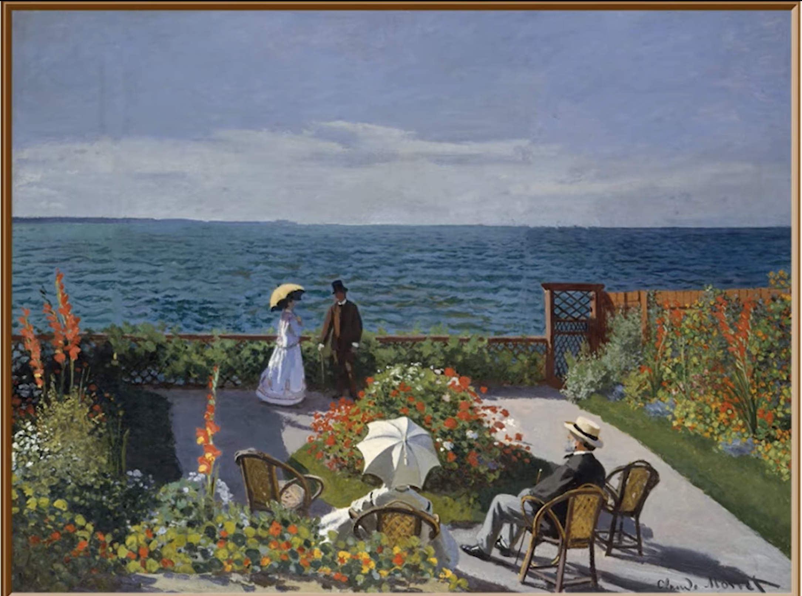
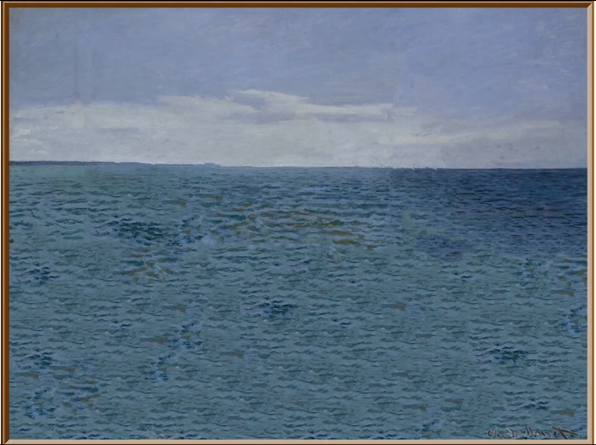
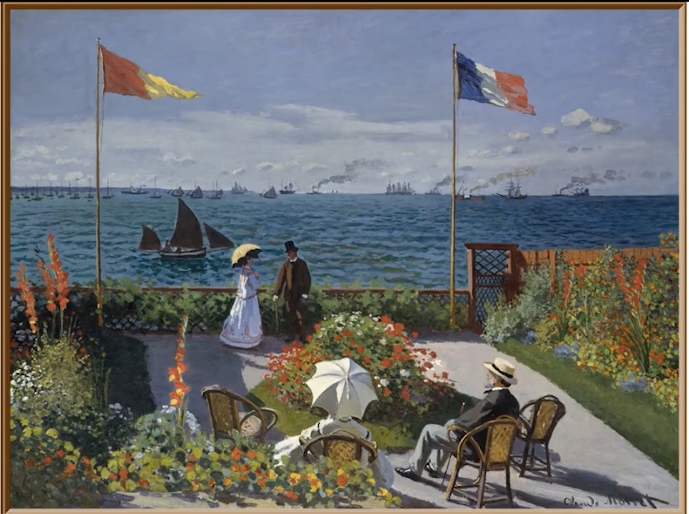
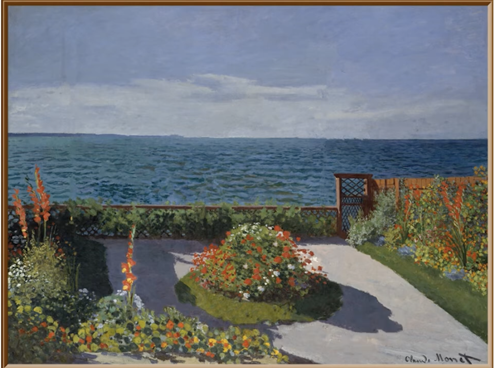

Quiz

1. When the steamboats and flags are removed, what main feeling does the painting convey?

2. True or False: Without the garden, the painting becomes a symbol of human achievement and care.

3. What did the steamboats and flags originally symbolize in Garden at Sainte-Adresse?

4. True or False: Without the people, the garden still feels lively and full of human stories.
5. When the people disappear from the scene, how does the painting's atmosphere change?